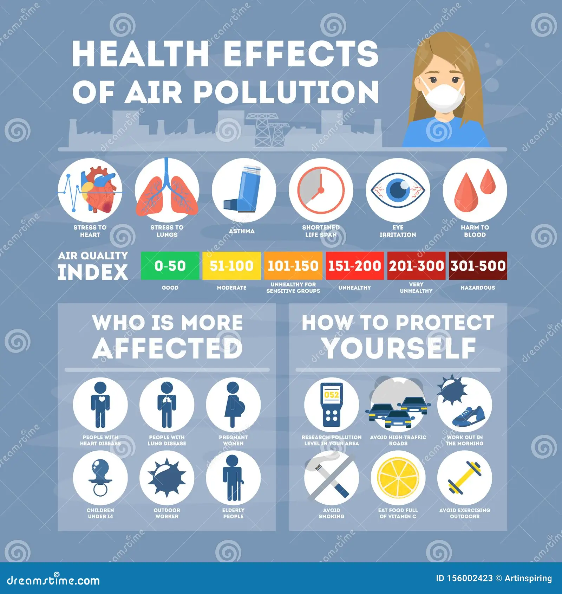
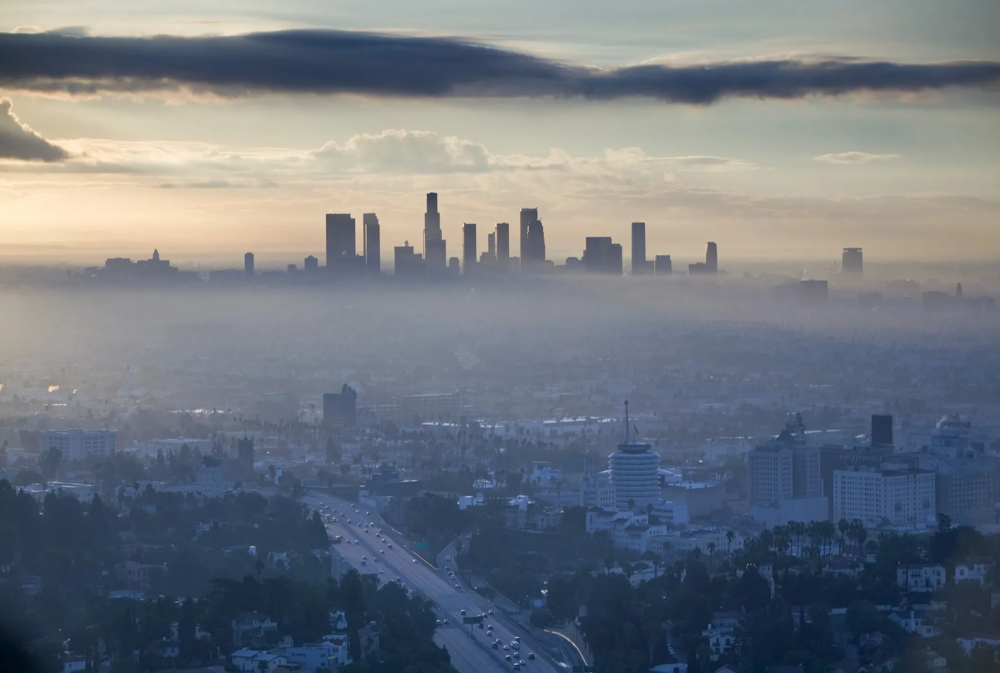

Effects of Air Pollution
Air pollution has serious effects on the environment, human health, and the economy. Some of the key effects include:
- Health Risks: Respiratory diseases, heart problems, asthma, and lung cancer are some of the diseases caused by prolonged exposure to air pollution. 
- Climate Change: Greenhouse gases like carbon dioxide contribute to global warming and climate change.
- Environmental Damage: Air pollution harms ecosystems, including forests, rivers, and wildlife. 
- Economic Impact: Healthcare costs rise, agricultural productivity drops, and overall quality of life decreases due to air pollution.
Air Quality Index:
AirNow.gov: Provides information on AQI levels and colors, including:
Green: Good, with values of 0 to 50
Yellow: Moderate, with values of 51 to 100
Orange: Unhealthy for sensitive groups, with values of 101 to 150
Red: Unhealthy, with values of 151 to 200
AQLI: Provides information on air quality in India, including:
All 1.3 billion people in India live in areas with annual average particulate pollution levels that exceed the WHO guideline
67.4% of the population live in areas that exceed the country's own national air quality standard
World Health Organization (WHO): Provides data on air pollution, including:
In 2019, 6.7 million deaths were caused by exposure to ambient and household air pollution
99% of the world's population live in places where air pollution levels exceed WHO guideline limits
Clean Air Fund: Provides statistics on air pollution, including:
8.1 million premature deaths annually are attributed to air pollution
Air pollution kills more people than tobacco worldwide
EnviroFlash: Provides information on patient exposure and the AQI
AirNow Fire and Smoke Map: Provides air quality data collected at outdoor monitors across the US
IQAir: Provides information on India's air quality index and air pollution
waqi.info: Provides real-time AQI data